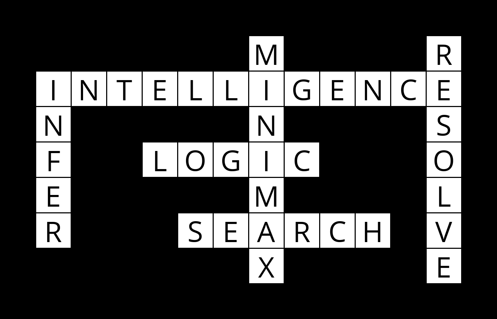
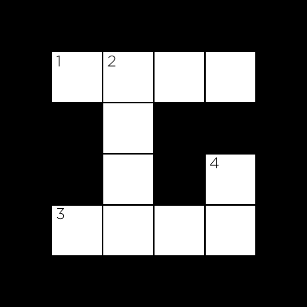

Crossword
The latest version of Python you should use in this 课程 is Python 3.12.
Write an AI to generate crossword 谜题.
$ python generate.py data/structure1.txt data/words1.txt output.png
██████████████
███████M████R█
█INTELLIGENCE█
█N█████N████S█
█F██LOGIC███O█
█E█████M████L█
█R███SEARCH█V█
███████X████E█
██████████████

When to Do It
How to Get Help
背景
How might you go 关于 generating a crossword puzzle? Given the structure of a crossword puzzle (i.e., which squares of the grid are meant to be filled in with a letter), and a list of words to use, the problem becomes one of choosing which words should go in each vertical or horizontal sequence of squares. We can model this 排序 of problem as a constraint satisfaction problem. Each sequence of squares is one variable, for which we need to decide on its value (which word in the domain of possible words will fill in that sequence). Consider the following crossword puzzle structure.

In this structure, we have four variables, representing the four words we need to fill into this crossword puzzle (each indicated by a number in the above image). Each variable is defined by four values: the row it begins on (its i value), the column it begins on (its j value), the direction of the word (either down or across), and the length of the word. Variable 1, for 示例, would be a variable represented by a row of 1 (assuming 0 indexed counting from the top), a column of 1 (also assuming 0 indexed counting from the left), a direction of across, and a length of 4.
As with many constraint satisfaction problems, these variables have both unary and binary constraints. The unary constraint on a variable is given by its length. For Variable 1, for instance, the value BYTE would satisfy the unary constraint, but the value BIT would not (it has the wrong number of letters). Any values that don’t satisfy a variable’s unary constraints can therefore be removed from the variable’s domain immediately.
The binary constraints on a variable are given by its overlap with neighboring variables. Variable 1 has a single neighbor: Variable 2. Variable 2 has two neighbors: Variable 1 and Variable 3. For each pair of neighboring variables, those variables share an overlap: a single square that is common to them both. We can represent that overlap as the character index in each variable’s word that must be the same character. For 示例, the overlap between Variable 1 and Variable 2 might be represented as the pair (1, 0), meaning that Variable 1’s character at index 1 necessarily must be the same as Variable 2’s character at index 0 (assuming 0-indexing, again). The overlap between Variable 2 and Variable 3 would therefore be represented as the pair (3, 1): character 3 of Variable 2’s value must be the same as character 1 of Variable 3’s value.
For this problem, we’ll add the additional constraint that all words must be different: the same word should not be repeated multiple times in the puzzle.
The challenge ahead, then, is write a program to find a satisfying 作业: a different word (from a given vocabulary list) for each variable such that all of the unary and binary constraints are met.
入门
- 下载 the distribution code from https://cdn.cs50.net/ai/2023/x/项目/3/crossword.zip and unzip it.
Understanding
There are two Python files in this 项目: crossword.py and generate.py. The first has been entirely written for you, the second has some functions that are left for you to implement.
First, let’s take a look at crossword.py. This file defines two classes, Variable (to represent a variable in a crossword puzzle) and Crossword (to represent the puzzle itself).
Notice that to create a Variable, we must specify four values: its row i, its column j, its direction (either the constant Variable.ACROSS or the constant Variable.DOWN), and its length.
The Crossword class requires two values to create a new crossword puzzle: a structure_file that defines the structure of the puzzle (the _ is used to represent blank cells, any other character represents cells that won’t be filled in) and a words_file that defines a list of words (one on each line) to use for the vocabulary of the puzzle. Three 示例 of each of these files can be found in the data directory of the 项目, and you’re 欢迎 to create your own as well.
笔记 in particular, that for any crossword object crossword, we store the following values:
-
crossword.heightis an integer representing the height of the crossword puzzle. -
crossword.widthis an integer representing the width of the crossword puzzle. -
crossword.structureis a 2D list representing the structure of the puzzle. For any valid rowiand columnj,crossword.structure[i][j]will beTrueif the cell is blank (a character must be filled there) and will beFalseotherwise (no character is to be filled in that cell). -
crossword.wordsis a set of all of the words to draw from when constructing the crossword puzzle. -
crossword.variablesis a set of all of the variables in the puzzle (each is aVariableobject). -
crossword.overlapsis a dictionary mapping a pair of variables to their overlap. For any two distinct variablesv1andv2,crossword.overlaps[v1, v2]will beNoneif the two variables have no overlap, and will be a pair of integers(i, j)if the variables do overlap. The pair(i, j)should be interpreted to mean that theith character ofv1’s value must be the same as thejth character ofv2’s value.
Crossword objects also support a method neighbors that returns all of the variables that overlap with a given variable. That is to say, crossword.neighbors(v1) will return a set of all of the variables that are neighbors to the variable v1.
下一页, take a look at generate.py. Here, we define a class CrosswordCreator that we’ll use to solve the crossword puzzle. When a CrosswordCreator object is created, it gets a crossword property that should be a Crossword object (and therefore has all of the properties described above). Each CrosswordCreator object also gets a domains property: a dictionary that maps variables to a set of possible words the variable might take on as a value. Initially, this set of words is all of the words in our vocabulary, but we’ll soon write functions to restrict these domains.
We’ve also defined some functions for you to help with 测试 your code: print will print to the terminal a representation of your crossword puzzle for a given 作业 (every 作业, in this function and elsewhere, is a dictionary mapping variables to their corresponding words). save, meanwhile, will generate an image file corresponding to a given 作业 (you’ll need to pip3 install Pillow if you haven’t already to use this function). letter_grid is a helper function used by both print and save that generates a 2D list of all characters in their appropriate positions for a given 作业: you likely won’t need to call this function yourself, but you’re 欢迎 to if you’d like to.
Finally, notice the solve function. This function does three things: first, it calls enforce_node_consistency to enforce node consistency on the crossword puzzle, ensuring that every value in a variable’s domain satisfy the unary constraints. 下一页, the function calls ac3 to enforce arc consistency, ensuring that binary constraints are satisfied. Finally, the function calls backtrack on an initially empty 作业 (the empty dictionary dict()) to try to calculate a solution to the problem.
The functions enforce_node_consistency, ac3, and backtrack, though, are not yet implemented (among other functions). That’s where you come in!
规格说明
Complete the implementation of enforce_node_consistency, revise, ac3, assignment_complete, consistent, order_domain_values, selected_unassigned_variable, and backtrack in generate.py so that your AI generates complete crossword 谜题 if it is possible to do so.
The enforce_node_consistency function should update self.domains such that each variable is node consistent.
- Recall that node consistency is achieved when, for every variable, each value in its domain is consistent with the variable’s unary constraints. In the case of a crossword puzzle, this means making sure that every value in a variable’s domain has the same number of letters as the variable’s length.
- To remove a value
xfrom the domain of a variablev, sinceself.domainsis a dictionary mapping variables to sets of values, you can callself.domains[v].remove(x). - No return value is necessary for this function.
The revise function should make the variable x arc consistent with the variable y.
-
xandywill both beVariableobjects representing variables in the puzzle. - Recall that
xis arc consistent withywhen every value in the domain ofxhas a possible value in the domain ofythat does not cause a conflict. (A conflict in the context of the crossword puzzle is a square for which two variables disagree on what character value it should take on.) - To make
xarc consistent withy, you’ll want to remove any value from the domain ofxthat does not have a corresponding possible value in the domain ofy. - Recall that you can access
self.crossword.overlapsto get the overlap, if any, between two variables. - The domain of
yshould be left unmodified. - The function should return
Trueif a revision was made to the domain ofx; it should returnFalseif no revision was made.
The ac3 function should, using the AC3 algorithm, enforce arc consistency on the problem. Recall that arc consistency is achieved when all the values in each variable’s domain satisfy that variable’s binary constraints.
- Recall that the AC3 algorithm maintains a queue of arcs to process. This function takes an 可选 argument called
arcs, representing an initial list of arcs to process. IfarcsisNone, your function should start with an initial queue of all of the arcs in the problem. Otherwise, your algorithm should begin with an initial queue of only the arcs that are in the listarcs(where each arc is a tuple(x, y)of a variablexand a different variabley). - Recall that to implement AC3, you’ll revise each arc in the queue one at a 时间. Any 时间 you make a change to a domain, though, you 五月 need to add additional arcs to your queue to ensure that other arcs stay consistent.
- You 五月 find it helpful to call on the
revisefunction in your implementation ofac3. - If, in the process of enforcing arc consistency, you remove all of the remaining values from a domain, return
False(this means it’s impossible to solve the problem, since there are no 更多 possible values for the variable). Otherwise, returnTrue. - You do not need to worry 关于 enforcing word uniqueness in this function (you’ll implement that check in the
consistentfunction.)
The assignment_complete function should (as the 姓名 suggests) check to see if a given assignment is complete.
- An
assignmentis a dictionary where the keys areVariableobjects and the values are strings representing the words those variables will take on. - An 作业 is complete if every crossword variable is assigned to a value (regardless of what that value is).
- The function should return
Trueif the 作业 is complete and returnFalseotherwise.
The consistent function should check to see if a given assignment is consistent.
- An
assignmentis a dictionary where the keys areVariableobjects and the values are strings representing the words those variables will take on. 笔记 that the 作业 五月 not be complete: not all variables will necessarily be present in the 作业. - An 作业 is consistent if it satisfies all of the constraints of the problem: that is to say, all values are distinct, every value is the correct length, and there are no conflicts between neighboring variables.
- The function should return
Trueif the 作业 is consistent and returnFalseotherwise.
The order_domain_values function should return a list of all of the values in the domain of var, ordered according to the least-constraining values heuristic.
-
varwill be aVariableobject, representing a variable in the puzzle. - Recall that the least-constraining values heuristic is computed as the number of values ruled out for neighboring unassigned variables. That is to say, if assigning
varto a particular value results in eliminatingnpossible choices for neighboring variables, you should order your results in ascending order ofn. - 笔记 that any variable present in
assignmentalready has a value, and therefore shouldn’t be counted when computing the number of values ruled out for neighboring unassigned variables. - For domain values that eliminate the same number of possible choices for neighboring variables, any ordering is acceptable.
- Recall that you can access
self.crossword.overlapsto get the overlap, if any, between two variables. - It 五月 be helpful to first implement this function by returning a list of values in any arbitrary order (which should still generate correct crossword 谜题). Once your algorithm is working, you can then go 返回 and ensure that the values are returned in the correct order.
- You 五月 find it helpful to
sorta list according to a particularkey: Python contains some helpful functions for achieving this.
The select_unassigned_variable function should return a single variable in the crossword puzzle that is not yet assigned by assignment, according to the minimum remaining value heuristic and then the degree heuristic.
- An
assignmentis a dictionary where the keys areVariableobjects and the values are strings representing the words those variables will take on. You 五月 assume that the 作业 will not be complete: not all variables will be present in the 作业. - Your function should return a
Variableobject. You should return the variable with the fewest number of remaining values in its domain. If there is a tie between variables, you should choose among whichever among those variables has the largest degree (has the most neighbors). If there is a tie in both cases, you 五月 choose arbitrarily among tied variables. - It 五月 be helpful to first implement this function by returning any arbitrary unassigned variable (which should still generate correct crossword 谜题). Once your algorithm is working, you can then go 返回 and ensure that you are returning a variable according to the heuristics.
- You 五月 find it helpful to
sorta list according to a particularkey: Python contains some helpful functions for achieving this.
The backtrack function should accept a partial 作业 assignment as input and, using backtracking 搜索, return a complete satisfactory 作业 of variables to values if it is possible to do so.
- An
assignmentis a dictionary where the keys areVariableobjects and the values are strings representing the words those variables will take on. The input 作业 五月 not be complete (not all variables will necessarily have values). - If it is possible to generate a satisfactory crossword puzzle, your function should return the complete 作业: a dictionary where each variable is a key and the value is the word that the variable should take on. If no satisfying 作业 is possible, the function should return
None. - If you would like, you 五月 find that your algorithm is 更多 efficient if you interleave 搜索 with inference (as by maintaining arc consistency every 时间 you make a new 作业). You are not 必需 to do this, but you are permitted to, so long as your function still produces correct results. (It is for this reason that the
ac3function allows anarcsargument, in case you’d like to start with a different queue of arcs.)
You should not modify anything else in generate.py other than the functions the 规格说明 calls for you to implement, though you 五月 write additional functions and/or import other Python standard library modules. You 五月 also import numpy or pandas, if familiar with them, but you should not use any other third-party Python modules. You should not modify anything in crossword.py.
提示
- For
order_domain_valuesandselect_unassigned_variable, it 五月 be helpful to implement them first without worrying 关于 the heuristics, and then add heuristics later. Your algorithm will still work: it just 五月 end up exploring 更多 作业 than it needs to before finding a solution. - To run your program, you can run a command like
python generate.py data/structure1.txt data/words1.txt, specifying a structure file and a words file. If an 作业 is possible, you should see the resulting 作业 printed. You 五月 also add an additional command-line argument for an image file, as by runningpython generate.py data/structure1.txt data/words1.txt output.png, to generate an image representation of the resulting crossword puzzle as well. - The
Crosswordclass has aneighborsfunction you can use to access all of the neighbors (i.e., overlapping variables) of a particular variable. Feel free to use that any 时间 you need to determine the neighbors of a particular variable!
测试
If you’d like, you can execute the below (after setting up check50 on your system) to evaluate the correctness of your code. This isn’t obligatory; you can simply 提交 following the steps at the end of this 规格说明, and these same tests will run on our server. Either way, be sure to compile and test it yourself as well!
check50 ai50/projects/2024/x/crossword
Execute the below to evaluate the style of your code using style50.
style50 generate.py
Remember that you 五月 not import any modules (other than those in the Python standard library) other than those explicitly authorized herein. Doing so will not only prevent check50 from running, but will also prevent submit50 from scoring your 作业, since it uses check50. If that happens, you’ve likely imported something disallowed or otherwise modified the distribution code in an unauthorized manner, per the 规格说明. There are certainly 工具 out there that trivialize some of these 项目, but that’s not the goal here; you’re learning things at a lower level. If we don’t say here that you can use them, you can’t use them.
如何提交
- Visit this link, log in with your GitHub account, and click Authorize cs50. Then, check the box indicating that you’d like to grant 课程 工作人员 access to your submissions, and click Join 课程.
-
Install Git and, optionally, install
submit50. - If you’ve installed
submit50, executesubmit50 ai50/projects/2024/x/crosswordOtherwise, using Git, push your work to
https://github.com/me50/USERNAME.git, whereUSERNAMEis your GitHub username, on a branch calledai50/projects/2024/x/crossword.
If you 提交 your code directly using Git, rather than submit50, do not include files or folders other than those you are actually instructed to modify in the 规格说明 above. (That is to say, don’t upload your entire directory!)
Work should be graded within five minutes. You can then go to https://cs50.me/cs50ai to view your current progress!